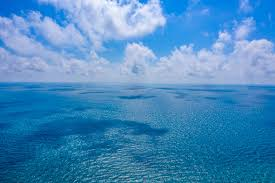
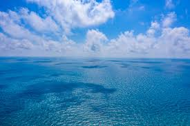

저는 손다정이라고 합니다. 바다를 좋아합니다. 바다를 보면 시원해집니다. 바다를 보면 마음이 편안해지고 개운해집니다. 바다의 주된 색인 파란색, 하늘색, 하얀색을 가장 좋아하기도 합니다. 여행을 간다면 바다가 있는 곳으로 가고 싶습니다. 물이 좋은 곳은 호주입니다. 호주말고도 일본으로 가 여러 섬들도 보고싶습니다. 저는 그림에도 소질이 있습니다. 좋아하는 색인 파란색을 그림 그릴 때 많이 씁니다. 바다에서 나는 특유의 냄새가 있습니다. 바닷물에 함유된 불순물의 냄새, 갯벌 특유의 냄새, 주변에서 생선을 말리는 비린내 등이 합쳐져서 나는 것입니다. 덥고 습한 여름에 바닷가에 가면 이런 냄새를 뚜렷이 느낄 수 있으며, 매생이 등 해조류도 바다 냄새가 진합니다. 하지만 바닷가(1km 이내)에 살거나 장기간 머물면 느끼지 못 합니다. 바다의 색이 파란 이유는 빛의 산란의 결과이다. 태양빛이 대기 중을 통과하면서 짧은 파장의 빛이 더 많이 산란되는데 푸른색을 띠는 바로 이 짧은 파장의 빛 때문에 바다가 파랗게 보이는 것입니다. 바다에 모래나 산호, 물고기 등이 많은 경우 태양빛이 부딪혀 다른 파장의 빛이 산란되어 바닷물의 색이 다양한 색으로 보일 수 있습니다. *참고* 바다의 효능:바다를 일주일에 1회 이상 가면 건강이 매우 좋을 가능성이 2.6배 높다는 연구 결과가 나왔다. 오스트리아 빈대학 산드라 가이거 교수 연구팀은 영국, 독일, 그리스, 이탈리아, 호주 등 15개국 1만5000명 이상을 대상으로 설문조사를 실시해 바닷가 방문 빈도와 건강 간 연관성을 분석했다. 그 결과, 일주일에 1회 이상 바다를 찾는 사람은 그렇지 않은 사람보다 건강이 매우 좋을 가능성이 2.6배 높았다. 바다에서 1km 떨어진 곳에 사는 사람은 100km 떨어진 곳에 사는 사람보다 건강이 매우 좋을 가능성이 22%, 건강이 좋을 가능성이 6% 더 높았다. 연구팀은 물이 있는 푸른색 공간을 방문하면 교감 신경계를 자극해 심혈관 건강에 긍정적인 영향을 주는 것으로 추정했다. 또한 바다와 거주지의 거리가 가까울수록 방문하기가 쉽고, 방문하면 스트레스가 줄고 신체활동량이 늘어나기 때문에 건강이 더 좋을 수 있다고 설명했다. 실제 2021년 스페인 세계보건연구소 연구팀이 성인 59명을 대상으로 매일 20분씩 바르셀로나의 해변과 같이 물이 있는 장소에서 산책하도록 한 결과, 혈압과 심박수가 안정되고 정신 건강 또한 개선된 것으로 나타났다. 2013년 영국 엑스터 대학 로라 플레밍 교수 연구에서도 사람들이 사는 곳과 해변가 간의 거리가 가까울수록 더 건강할 확률이 높았다. 산드라 가이거 교수는 "15개국 모두에서 바닷가를 자주 찾으면 건강에 도움이 되는 현상이 일관되게 나타났다"고 말했다. 이 연구 결과는 국제학술지 '네이처 커뮤니케이션 지구 및 환경(Nature communications earth & environment)'에 최근 게재됐다.


.jpeg) 
